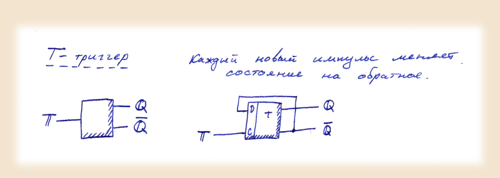

Постановка выполняемой задачи
В данной задаче нам необходимо:
Построить на модели "TINA" и продемонстрировать работу T-триггера (на базе D-триггера на микросхеме JK).
Для выполнение данной работы воспользуемся ранее описанными логическими элементами. Так же мы уже определили понятие триггера и описали работу JK и D триггеров.
Опишем Т-триггер:
